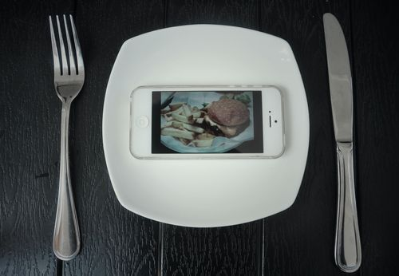
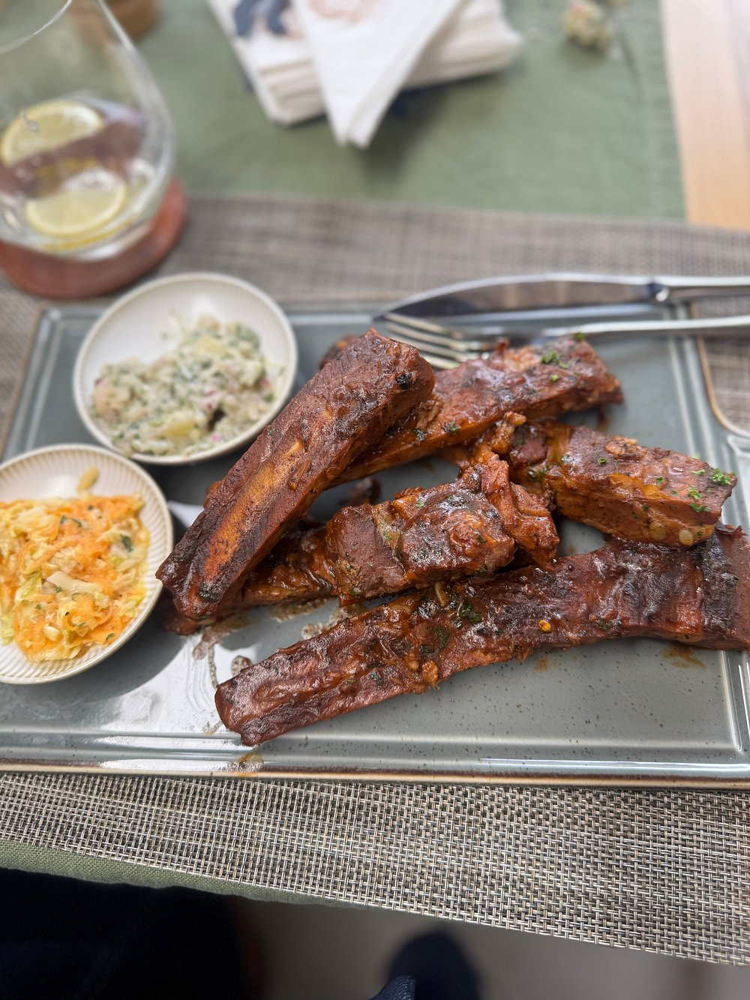
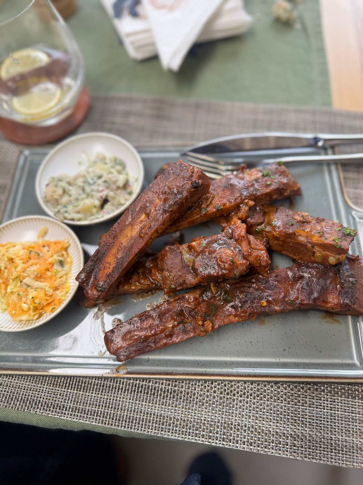

Experience the finest dining in town.
 

Learn more about our story and values “Bills Restaurant serves all sort of meal and seasonal fare with a focus on fresh, local ingredients. Opened by native Kenyans, the concept was born by friends whose vision was to provide the neighborhood with delicious comfort food in a cozy, intimate setting." The main attraction, modeled after the Minneapolis-originated phenomenon, the “Juicy Lucy,” features two thin beef short rib blend patties pinched together encasing a scoop of pimento cheese, the result: a molten core of cheese oozing from the patty. Bills introduced their take on the cult burger in 2010 to rave reviews. In addition, Bills offers a vast array of specialty crafted meals including The Hound, Spicy Patty, and The Mangold just to name a few. While we are known for our special and delicious meals, some of our other most popular items include our Ringoz, Veggie Burger,Pizza ,Samosa and Salad..
Get in touch with us for reservations or inquiries.